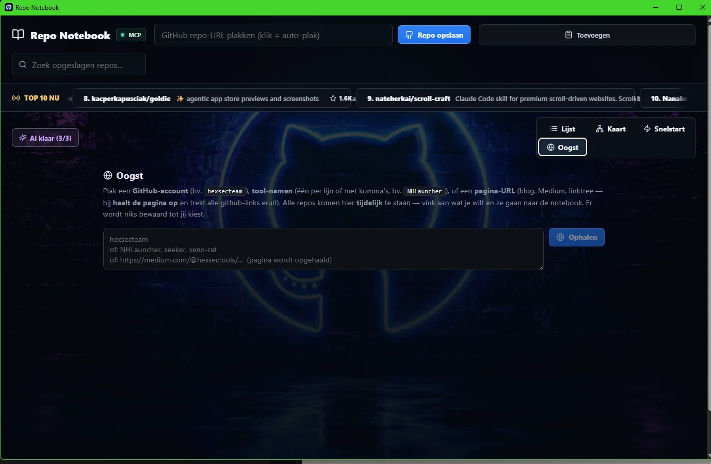
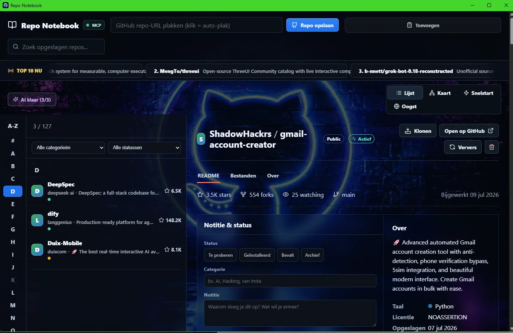

ELECTRON · AI LOCALE · CONOSCENZA
Repo Notebook
Un ambiente di conoscenza visivo che raccoglie, analizza e presenta i repository GitHub come informazioni collegate — con Raccolta, AI locale e suggerimenti intelligenti.
RISULTATO
127 repository gestiti e categorizzati da AI locale — nessuna API cloud, nessun abbonamento.


01 IL PROBLEMA
Chi lavora molto con l'open source accumula centinaia di repository: in schede del browser, stelline, note e cartelle sparse. Lì la conoscenza va persa. Perché l'avevi salvato? Funziona ancora? A cosa è collegato?
02 COSA FA
- Raccogliere senza attrito
- Incolla l'URL di un repo e viene salvato con README, stelle, fork, linguaggio e licenza. Cerca, filtra per categoria e stato, e un indice A–Z per grandi raccolte.
- Raccolta
- Incolla un account GitHub, un elenco di nomi di tool o l'URL di una pagina (blog, Medium, linktree). Raccolta recupera la pagina, estrae tutti i link GitHub e ti lascia scegliere cosa va nel notebook. Nulla viene salvato finché non lo spunti tu.
- AI locale
- Categorie, riassunti e suggerimenti arrivano da un modello linguistico in locale. Nessun dato nel cloud, nessun costo API, funziona anche offline.
- Note & stato
- Per ogni repo una nota propria (‘perché l'hai salvato?’) e uno stato: da provare, installato, mi piace, archivio. Così la raccolta resta viva invece di diventare un cimitero.
- Mappa & Avvio rapido
- Visualizza i repository come mappa connessa e clonali o aprili su GitHub con un clic.
- Collegamento MCP
- Tramite il Model Context Protocol gli assistenti AI possono cercare e leggere direttamente nel notebook — la base per il plugin Obsidian.
03 COSA HO IMPARATO
L'AI locale è abbastanza veloce per questo tipo di lavoro se mantieni i compiti piccoli: categorizzare, riassumere, suggerire. Il guadagno maggiore non stava nel modello, ma nel workflow attorno — Raccolta e i pulsanti di stato hanno fatto la differenza tra ‘comodo’ e ‘uso quotidiano’.
INTERESSATO?
Facciamo due chiacchiere.
Dimmi cosa ne pensi — o cosa vorresti farci.